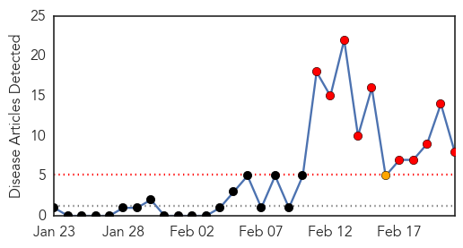
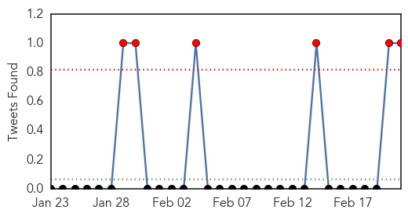
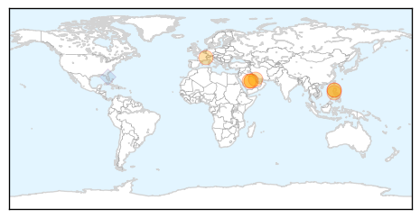
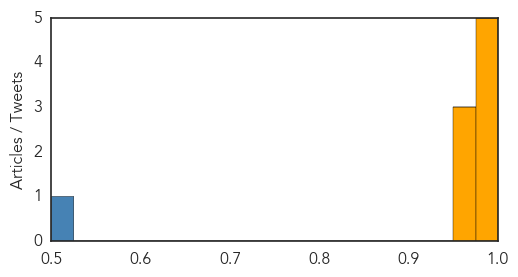

MERS
30-Day Web Trend
10 alerts, 1 warnings

30-Day Twitter Trend
5 alerts, 1 warnings

Article Locations
Article Confidences
Top Articles:
- 0.996
- MERS kills 17 since Feb. 11; Buraidah woman latest victim
- 0.996
- MERS deaths surge in Saudi Arabia
- 0.990
- MERS deaths surge in Saudi Arabia
- 0.987
- MERS war stepped up in Saudi Arabia as 5 lives lost in 1 day
- 0.985
- Filipino nurse tests negative for MERS
- 0.972
- Saudi Health Ministry Data Show Surge in MERS Deaths
- 0.965
- OFWs in Riyadh give free vaccinations vs spread of MERs-Corona Virus « Bulatlat
- 0.964
- Filipino nurse tests negative for MERS
Top Tweets:
- 0.765
- AFD Blog `Saudi MOH: 2 New MERS Cases, 2 Deaths Reported' MERS-CoV http://t.co/4Sa1D17Mqa
Mumps
30-Day Web Trend
4 alerts, 0 warnings

30-Day Twitter Trend
0 alerts, 0 warnings

Article Locations

Article Confidences

Top Articles:
-
No articles found for Feb 21, 2015
Top Tweets:
-
No tweets found for Feb 21, 2015